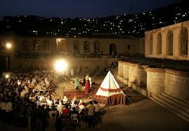

The culture of Afghanistan has persisted for centuries and encompasses the cultural diversity of the nation.Afghanistan's culture is historically strongly connected to nearby Persia, including the same religion, as the people of both countries have lived together for thousands of years. Its location at the crossroads of Central, South and Western Asia historically made it a hub of diversity, dubbed by one historian as the "roundabout of the ancient world". Afghanistan is a mostly tribal society with different regions of the country having their own subculture. Despite this, nearly all Afghans follow Islamic traditions, celebrate the same holidays, dress the same, consume the same food, listen to the same music and use Persian as the inter-ethnic lingua franca to a certain extent. Its culture is strongly tied with elements of Central Asia, which can be seen in the likes of language, cuisine and classical music. Afghan culture is increasingly becoming a dynamic realm of academic study in scholarly terms.In more recent history, Afghan culture has been threatened and fragmented due to the prolonged conflict in the country.
Kabul, city, capital of the province of Kabul and of Afghanistan. The largest urban centre in the country and also its political and economic hub, the city forms one of several districts of Kabul province. It lies at the intersection of roads that lead to Uzbekistan (via Mazār-e Sharīf) to the north, Pakistan (via Jalālābād) to the east, and Kandahār to the south. A settlement has existed at or near Kabul for some 3,500 years, but it was not until the early 20th century that the city extended north of the Kabul River. This growth continued through the 1980s, when villagers from areas affected by the Afghan War (1978–92) migrated to the relative safety of Kabul. Fighting between factions who occupied the city in 1992 resulted in significant damage and displacement of the urban population. The city has witnessed unprecedented growth since the U.S.-led invasion of the country in 2001 in response to the September 11 attacks.
Bamyan is referred to by some as the "Shining Light" and "Valley of Gods". There are several tourist attractions near the city, including the Buddhas of Bamyan, which were carved into cliffs on the north side of Bamyan city in the 6th and 7th centuries CE, dating them to the Hephthalite rule. Other attractions close to the city include Shahr-e Gholghola and Zuhak. In 2008, in a maze of caves in the Bamiyan Valley were found the world's oldest oil paintings. At the end of the 10th century, there was a Buddhist culture in which several thousand Buddhist monks lived in caves carved into the mountain. The 53 meters known as the Salsal and 35 meters known as Shahmama are the high-standing Buddha statues and best-known monuments left by the Buddhists, which were destroyed by the Taliban in 2001. Furthermore, there are several cultural sites left from both the Buddhist and the later Islamic era of the valley. After the overthrown of the Taliban from power in 2002, considerable efforts had been made to preserve the cultural monuments in the valley.
The city of Bamyan was part of the Kushan Empire in the early centuries of the Christian era. After the Kushan Empire fell to the Sassanids, Bamyan became part of the Kushansha, vassals to the Sassanids. The Buddhist pilgrim Fa Xian visited Bamyan in the fifth century and recorded that the king summoned the monks of the region for vows and prayers. Fa Xian also records landslides and avalanches in the mountains and the presence of snow during winter and summer. This latter statement suggests climatic change which could have contributed to the historical and economic importance of the area for the years to come. Another Buddhist traveller, Xuanzang, passed through Bamyan in the seventh century. His record shows that the Bamiyan Buddhas and cave monastery near it were already built. He also records that Buddhism in the region was in decay with the people being "hard and uncultivated
READ MOREAshak, Mantoo, Bulani, Ghabuli, 2 Pyazah, Ash doghi, Palak and etc...
Band Amir, Paghman, Bagh kolha, Ziyarat, Shar zuhak, Kulkulah, Koh baba and etc...
Mah Moharam, Eid Nuruz, Eid Ghadir, Eid Fetr, Holidays, Mother's day, Father's day and etc...
hazarah, pashton, tajik, ozbak, baluch, turkman, arab, nurestan, and etc..
Biology, History, Math, Dari, Chimistry, Physics, Computer, English and etc...
Ahmad Shaah Abdali, Timor Shah, Shah Shojah, Amin ollah, Habib ollah, Zaher Shah and etc..
Dari, Pashto, Hazaraki, Ozbaki, Brachi, Baluchi, Herati, Turki and etc...
In general, Afghanistan has extremely cold winters and hot summers, typical of a semiarid steppe climate. There are many regional variations, however. While the mountain regions of the northeast have a subarctic climate with dry, cold winters.
Most of the wild animals of the subtropical temperate zone inhabit Afghanistan. Large mammals, formerly abundant, are now greatly reduced in numbers, and the tiger has disappeared. There is still a great variety of wild animals roaming the mountains and foothills, including wolves, foxes, striped hyenas, and jackals.
Vegetation is sparse in the southern part of the country, particularly toward the west, where dry regions and sandy deserts predominate. Trees are rare, and only in the rainy season of early spring is the soil covered with flowering grasses and herbs. The plant cover becomes denser toward the north.